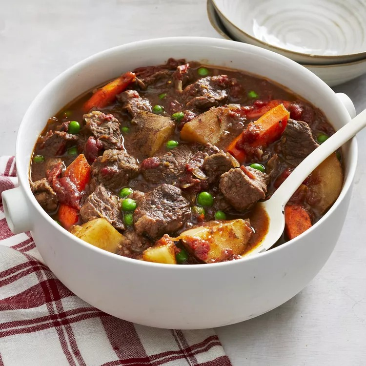

Christmas Eve Beef Stew

Description
A yummy Christmas tradition!
However you don't have to wait for Christmas to enjoy this warm, flavorful stew. This recipe can also be made in a slow cooker.
Prep Time: 10 mins
Additional Time: 6 hrs 10 mins
Total Time: 6 hrs 20 mins
Servings: 8
Ingredients
- 2-1/2 pounds beef stew meat, diced into 1 inch pieces
- 1 (28 ounce) can stewed tomatoes, with juice
- 1 cup chopped celery
- 4 carrots, sliced
- 3 potatoes, cubed
- 3 onions, chopped
- 3-1/2 tablespoons tapioca
- 2 cubes beef bouillon
- 1/8 teaspoon dried thyme
- 1/8 teaspoon dried rosemary
- 1/8 teaspoon marjoram
- 1/4 cup red wine
- 1 (10 ounce) package frozen green peas, thawed
Steps
- Preheat the oven to 250 degrees F (120 degrees C).
- Place beef, tomatoes, celery, carrots, potatoes, onions, and tapioca into a Dutch oven. Season with beef bouillon, thyme, rosemary, and marjoram; stir in red wine. Place the lid on the Dutch oven.
- Bake for 5 to 6 hours in the preheated oven. Add peas during last half hour of cooking.